SECCIÓN 1D
REFRIGERACIÓN DEL MOTOR
Precaución: Desconecte el cable negativo de la batería antes de desmontar o instalar cualquier unidad eléctrica o cuando exista la posibilidad de que una herramienta o equipo pueda entrar en contacto con bornes eléctricos expuestos. La desconexión de dicho cable ayudará a evitar lesiones personales y daños al vehículo. La llave de contacto debe estar en posición LOCK a menos que se indique lo contrario.
ESPECIFICACIONES
Especificaciones del sistema de refrigeración
| Aplicación | Descripción | Unidad | Estándar |
| Sistema de refrigeración | Tipo de refrigeración | - | Refrigeración por agua forzada |
| Refrigerante | Capacidad de refrigerante | L (qt) | 8.0 (8.5) |
| Tipo de refrigerante | - | Refrigerante a base de silicato |
| Termostato | Tipo de termostato | - | Bola de cera de expansión |
| . | Temperatura (apertura inicial) | °C (°F) | 82 ± 2 (179.6 ± 35.6) |
| . | Temperatura (completamente abierto) | °C (°F) | 97 (206.6) |
| . | Temperatura (completamente cerrado) | °C (°F) | 79 ± 2 (174.2 ± 35.6) |
| . | Carrera (completamente abierto) | mm (") | 8 (0.315) |
| Cámara de compensación | Presión de apertura de la válvula de presión | kPa (lbs/pulg2) | 125~155 (18,13~22,48) |
| . | Presión de apertura de la válvula de vacío | kPa (lbs/pulg2) | 10 (1.45) |
| Bomba de agua | Tipo de bomba de agua | - | Centrífuga |
| . | Diámetro del rodete | mm (") | 65 (2.56) |
| . | Número de aspas del rodete | EA | 6 |
| Radiador | Tipo | - | Flujo descendente |
Anchura del núcleo | mm (") | 701 (27.60) |
Altura del núcleo | mm (") | 372 (14.65) |
Profundidad del núcleo | mm (") | 18 (0.71) |
Capacidad de refrigeración mínima | cal/h | A/T : 48,000 H/T : 38.000 |
Especificaciones de apriete de la sujeción
| Aplicación | N•m | Árbol de transmisión izquierdo | Articulación |
| Tornillos de fijación de la bomba de agua | 10 | - | 89 |
| Tornillos de fijación del conjunto del ventilador | 4 | - | 35 |
| Tornillos de retención del motor del ventilador | 4 | - | 35 |
| Tornillos de retención del radiador, superior izquierdo y superior derecho | 14 | 10 | - |
| Tuercas de fijación del vaso de compensación | 5 | - | 44 |
| Tornillos de fijación de la caja del termostato | 20 | 15 | - |
DIAGNÓSTICO
Comprobación del termoestato
- Desmonte el termostato del vehículo. Consulte el apartado "Termostato" de esta sección.
- Asegúrese de que el muelle de válvula esté apretado cuando el termostato esté completamente cerrado. Si el muelle está flojo, sustituya el termostato.
- Introduzca el termostato y un termómetro dentro de un recipiente con una mezcla al 50% de agua y etilenglicol. No deje que el termostato ni el termómetro descansen sobre el fondo del recipiente, ya que la desigual distribución del calor en el fondo podría dar lugar a unas mediciones de temperatura inexactas.
- Caliente el recipiente con un mechero.
- Utilice el termómetro para medir la temperatura de la solución cuando esté caliente.
- El termostato debe empezar a abrirse a los 87°C (189°F) y debe estar completamente abierto a los 102°C (216°F). Si no se abre a estas temperaturas, sustituya el termostato.
Diagnóstico del sistema de refrigeración
El motor se calienta en exceso
| Comprobaciones | Medida |
| Compruebe si se pierde refrigerante. | Añada refrigerante. |
| Compruebe si la solución del refrigerante es débil. | Confirme que la solución del refrigerante sea una mezcla al 50% de agua y etilenglicol. |
| Compruebe si hay suciedad, hojas o insectos en la parte delantera del radiador. | Limpie la parte delantera del radiador. |
| Compruebe si hay fugas en los manguitos, la bomba de agua, el calefactor, la caja del termostato, el radiador, los tapones del panal del radiador o en la junta de la culata. | Sustituya cualquier componente dañado. |
| Compruebe si el termostato está defectuoso. | Sustituya un termostato dañado. |
| Compruebe si se da un reglaje del encendido retardado. | Efectúe un diagnóstico por códigos del ECM. Confirme la integridad de la correa de accionamiento. |
| Compruebe si el ventilador eléctrico del sistema de refrigeración funciona correctamente. | Sustituya el ventilador eléctrico. |
| Compruebe si los manguitos del radiador están obstruidos o deteriorados. | Sustituya cualquier manguito del radiador dañado. |
| Compruebe si funciona debidamente la bomba de agua. | Sustituya la bomba de agua defectuosa. |
| Compruebe si el tapón del vaso de compensación está defectuoso. | Sustituya el tapón del vaso de compensación defectuoso. |
| Compruebe si hay grietas u obstrucciones en la culata o en el bloque del motor. | Repare la culata o el bloque del motor dañado. |
Pérdida de refrigerante
| Comprobaciones | Medida |
| Compruebe si hay alguna fuga en el radiador. | Sustituya el radiador dañado. |
| Compruebe la presencia de fugas en los puntos siguientes: - Vaso de compensación.
- Manguito.
| Sustituya las piezas siguientes, según sea necesario: - Vaso de compensación.
- Manguito.
|
| Compruebe si los manguitos del radiador, manguitos del calefactor y sus conexiones están flojos o dañados. | Afiance la conexión de los manguitos. Sustituya los manguitos o las abrazaderas. |
| Compruebe si hay fugas en la junta estanca de la bomba de agua. | Sustituya la junta estanca de la bomba de agua. |
| Compruebe si hay fugas en la junta de la bomba de agua. | Sustituya la junta de la bomba de agua. |
| Compruebe si el par de apriete de la culata es correcto. | Apriete los tornillos de acuerdo con las especificaciones. Sustituya la junta de la culata, si fuera necesario. |
| Compruebe la presencia de fugas en los puntos siguientes: - Colector de admisión.
- Junta de la culata
- Tapón del bloque de cilindros
- Núcleo del calefactor
- Tapón de drenaje del radiador
| Repare o sustituya cualquier componente que sea necesario para corregir la fuga. |
El motor no alcanza la temperatura de funcionamiento normal o sale aire frío del calefactor
| Comprobaciones | Medida |
| Compruebe si el termostato se ha quedado agarrotado en posición abierta o si es un tipo incorrecto de termostato. | Monte un termostato nuevo del tipo y rango térmico correctos. |
| Compruebe el nivel del refrigerante para determinar si está por debajo de la marca de MIN en el vaso de compensación. | Añada suficiente refrigerante para elevar el nivel del líquido hasta la marca especificada en el vaso de compensación. |
LOCALIZACION DE COMPONENTES
Sistema de refrigeración
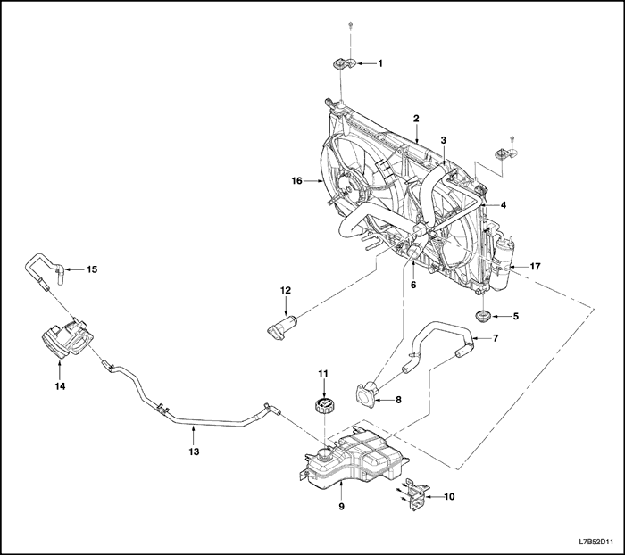


- Soporte del radiador superior
- Conjunto del radiador
- Manguito superior del radiador
- Manguito de rebose
- Silentbloc (soporte elástico de fijación) inferior del radiador
- Manguito inferior del radiador
- Manguito del vaso de compensación al motor
- Termostato
- Cámara de compensación
- Soporte del vaso de compensación
- Tapón del vaso de compensación
- Salida de agua
- Manguito de retorno del cuerpo del acelerador
- Cuerpo de la mariposa
- Manguito de entrada del cuerpo del acelerador
- Ventilador de refrigeración
- Condensador
Bomba de agua/Termoestato
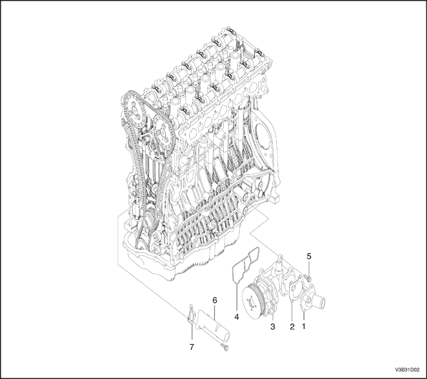
- Termostato
- Arandela de junta del termostato
- Bomba de agua
- Junta de goma de la bomba de agua
- Tornillo de fijación de la bomba de agua
- Orificio de salida del refrigerante
- Junta del orificio de salida del refrigerante
MANTENIMIENTO Y REPARACIÓN
SERVICIO EN VEHÍCULO
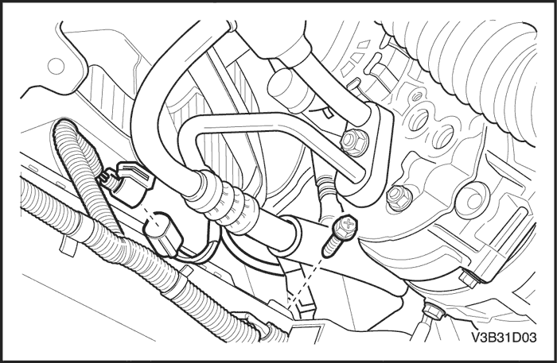
Purgar y llenar el sistema de refrigeración
Precaución: No desmonte el tapón del vaso de compensación mientras estén calientes el motor y el radiador. Se puede producir una emisión violenta de líquido caliente y vapor debido a la presión.
- Coloque un recipiente debajo del vehículo para recoger el refrigerante que se vaya a extraer.
- Quite el tapón del vaso de compensación.
- Quite el tapón de drenaje.
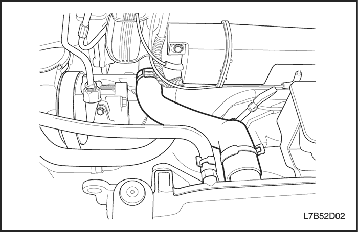
Precaución: Deseche el refrigerante usado en un depósito de recogida de este tipo de líquido, el cual se recogerá junto con el aceite usado para su eliminación. No vierta nunca el refrigerante usado por el desagüe. El anticongelante de etilenglicol es un producto químico sumamente tóxico. La eliminación de este compuesto a través del sistema del alcantarillado o de las aguas subterráneas puede contaminar el medio ambiente en la zona.
- Recoja el líquido que salga en una bandeja de drenaje.
- Elimine todos los lodos y suciedad del interior del vaso de compensación. Consulte el apartado "Vaso de compensación" de esta sección.
- Ponga el tapón de drenaje.
- Añada agua limpia al depósito de compensación.
- Llene el vaso lentamente de manera que el manguito superior del vaso quede por encima de la línea del agua. Esto permite la salida del aire que haya en el interior del sistema de refrigeración.
- Ponga el motor en marcha.
- Tenga en marcha el motor hasta que se abra el termostato. Se puede saber si el termostato está abierto tocando los manguitos del radiador para ver si están calientes.
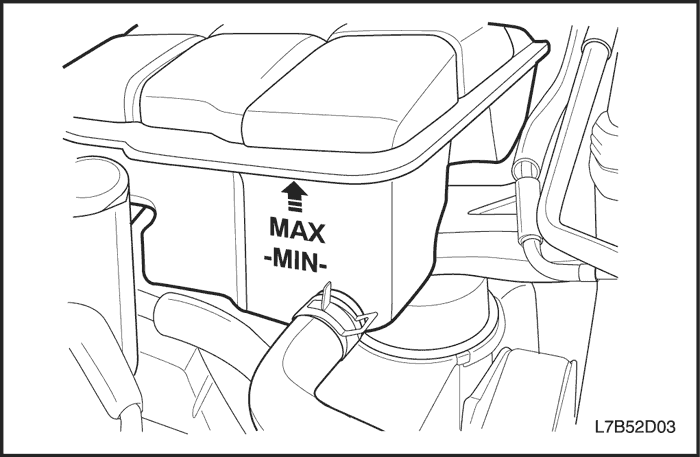
- Pare el motor.
- Repita los pasos 1 a 9 hasta que el agua que salga esté limpia y no contenga ni refrigerante ni óxido.
Aviso: No utilice nunca una mezcla de anticongelante con una concentración mayor del 60% de éste y 40% de agua. El punto de congelación de la solución aumenta por encima de esta concentración.
Precaución: No mezcle distintos tipos de anticongelante o sustancias anticorrosivas, ya que pueden ser incompatibles. Si ha utilizado distintos tipos en el sistema de refrigeración, limpie el sistema con agua limpia.
- Llene el sistema de refrigeración, a través del vaso de compensación, con una mezcla de anticongelante de etilenglicol y agua. La mezcla debe tener al menos un 50% de anticongelante, pero nunca más de un 60% del mismo.
- Llene el vaso de compensación hasta la marca de MAX en el exterior del vaso.
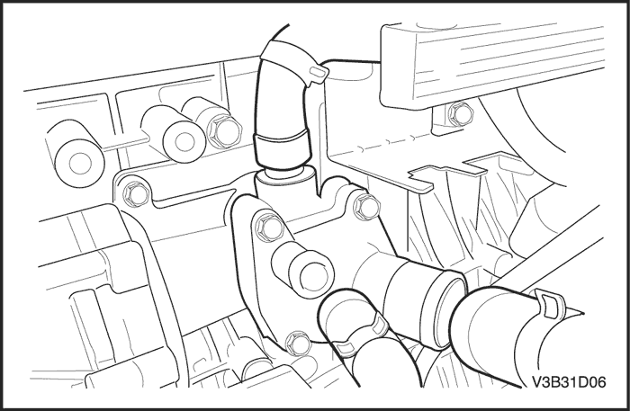
Termostato
Procedimiento de desmontaje
Precaución: Para evitar lesiones personales, no desmonte el tapón del vaso de compensación mientras el motor y el radiador estén calientes, ya que el calor hace que el sistema permanezca sometido a presión. Se puede producir una emisión violenta de líquido caliente y vapor debido a la presión.
- Extraiga el refrigerante. Consulte el apartado "Vaciado y llenado del sistema de refrigeración" de esta sección.
- Afloje la abrazadera del manguito de refrigerante de la caja del termostato.
- Desconecte el manguito de refrigerante de la caja del termostato.
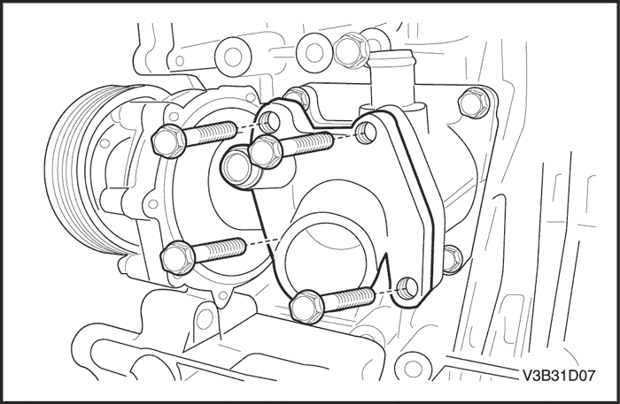
- Desmonte los tornillos de fijación que sujetan la caja del termostato a la culata.
- Desmonte la caja del termostato de la culata.
- Desmonte la junta tórica de la culata.
- Compruebe el asiento de la válvula en busca de cualquier material extraño que pueda impedir su cierre correcto.
- Compruebe el correcto funcionamiento del termostato. Consulte el apartado "Comprobación del termostato" de esta sección.
- Limpie la caja del termostato y las caras de acoplamiento de la culata.
procedimiento de montaje
- Recubra la superficie de cierre de la junta tórica nueva con Lubriplater®.
- Monte la nueva junta tórica en el hueco de la culata.
- Sujete la caja del termostato a la culata con los tornillos de fijación.
Apretar
Apriete los tornillos de fijación de la caja del termostato hasta 10 N•m (89 lb-pulg.).
- Conecte el manguito de refrigerante a la caja del termostato.
- Asegure el manguito de refrigerante a la caja del termostato con una abrazadera para manguito.
- Llene el sistema de refrigeración del motor. Consulte el apartado "Vaciado y llenado del sistema de refrigeración" de esta sección.
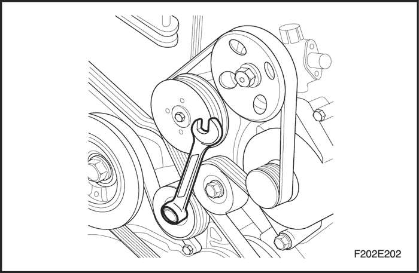
Bomba de agua
Procedimiento de desmontaje
- Vacíe el sistema de refrigeración del motor hasta un nivel por debajo de la caja del termostato. Consulte el apartado "Vaciado y llenado del sistema de refrigeración" de esta sección.
- Desmonte la correa de accionamiento de los accesorios. Consulte la Sección 6B, Bomba de la dirección asistida.
- Afloje la abrazadera de manguito del manguito de refrigerante situado en la caja del termostato y la bomba de agua.
- Desconecte el manguito de refrigerante de la caja del termostato y la bomba de agua.
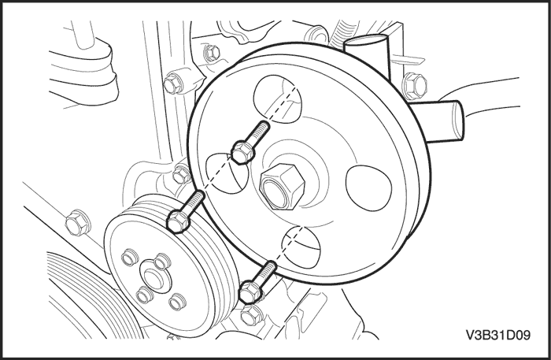
- Extraiga los tornillos de fijación de la bomba de la dirección asistida.
- Desmonte el alternador. Consulte la sección 1E, Sistema eléctrico del motor.
- Desmonte el compresor. Consulte la Sección 7B, Sistema de calefacción, ventilación y aire acondicionado de control manual.
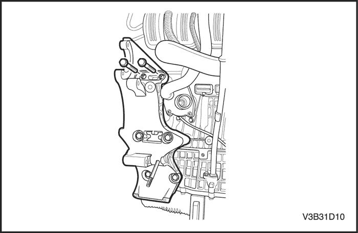
- Quite los tornillos del soporte.
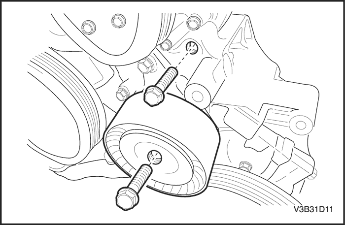
- Extraiga el tornillo de fijación del tensor automático.
- Desmonte el tensor automático.
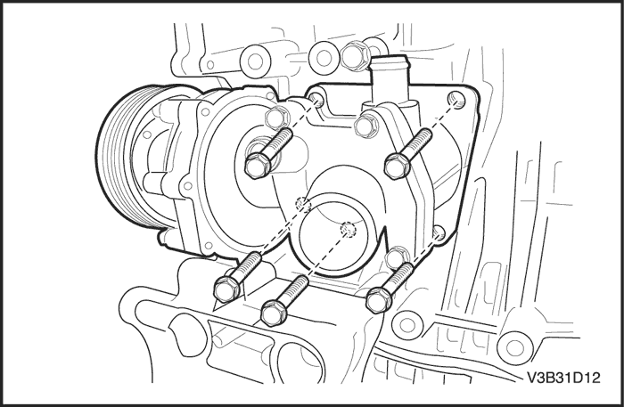
- Quite los tornillos de fijación de la bomba de agua.
- Desmonte la bomba de agua.
- Desmonte la junta de la bomba de agua.
- Compruebe el cuerpo de la bomba de agua en busca de grietas y fugas.
- Limpie las superficies de acoplamiento de la bomba de agua y del bloque del motor.
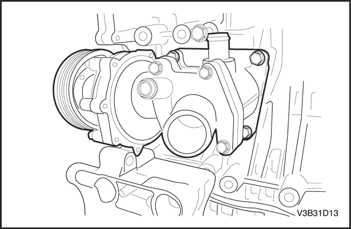
procedimiento de montaje
- Coloque una nueva junta en la bomba de agua.
- Sujete la bomba de agua al bloque del motor con los tornillos de fijación.
Apretar
Apriete los tornillos de fijación de la bomba de agua hasta 23 N•m (17 lb-pie).
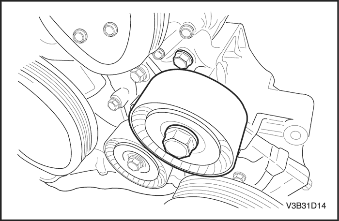
- Instale un tensor automático con el tornillo de fijación.
Apretar
Apriete el tornillo de fijación del tensor automático hasta 45 N•m (33 lb-pie).
- Coloque el soporte.
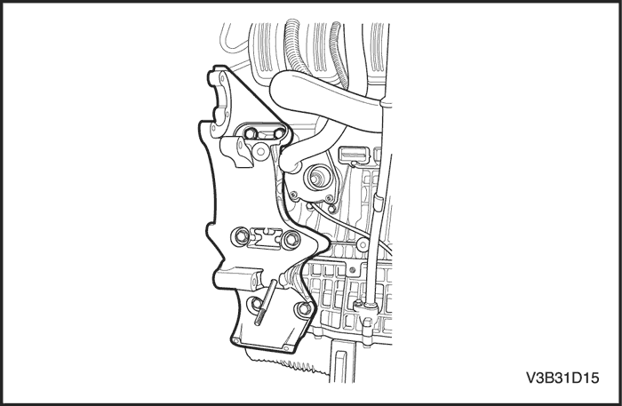
- Ponga los tornillos de fijación del soporte.
Apretar
Apriete los tornillos de fijación del soporte hasta 45 N•m (33 lb-pie).
- Monte la bomba de la dirección asistida.
- Ponga los tornillos de fijación de la bomba de la dirección asistida.
Apretar
Apriete los tornillos de fijación de la bomba de la dirección asistida hasta 25 N•m (18 lb-pie).
- Monte el alternador. Consulte la sección 1E, Sistema eléctrico del motor.
- Monte el compresor. Consulte la Sección 7B, Sistema de calefacción, ventilación y aire acondicionado de control manual.
- Monte la correa de accionamiento de los accesorios. Consulte la Sección 6B, Bomba de la dirección asistida.
- Llene el sistema de refrigeración del motor. Consulte el apartado "Vaciado y llenado del sistema de refrigeración" de esta sección.
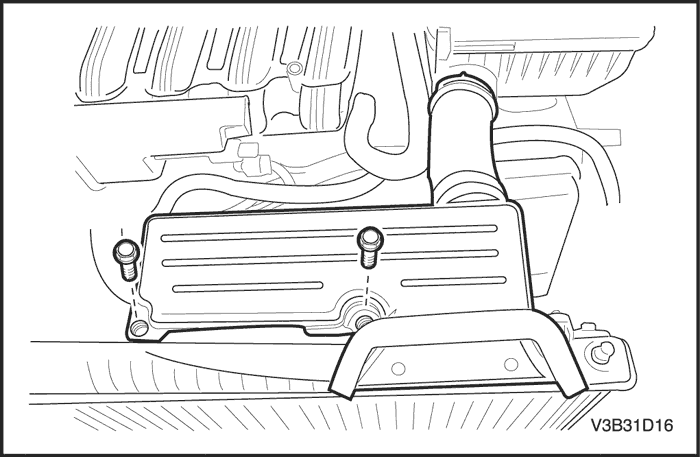
Ventilador de refrigeración eléctrico
Procedimiento de desmontaje
- Desconecte el cable negativo de la batería.
- Extraiga los tornillos de fijación del manguito de entrada del filtro del aire.
- Desmonte el manguito de entrada del filtro del aire.
- Extraiga el refrigerante. Consulte el apartado "Vaciado y llenado del sistema de refrigeración" de esta sección.
- Desconecte el manguito superior del radiador.
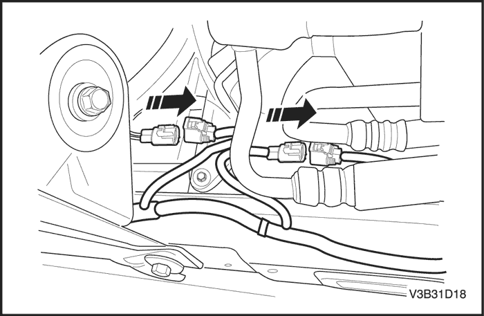
- Desenchufe el conector eléctrico del ventilador de refrigeración.
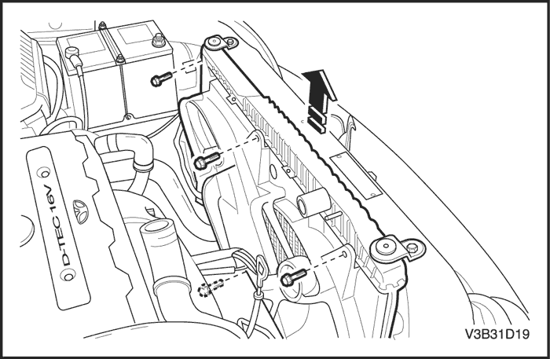
- Desmonte el conjunto carenado del ventilador tirando de él hacia arriba y extráigalo del vehículo.
procedimiento de montaje
Precaución: Tenga cuidado al acoplar la pletina de fijación sobre el carenado del ventilador en la conexión del depósito izquierdo del radiador. Asegúrese de deslizar la lengüeta del borde inferior del carenado dentro del clip de retención cerca de la parte central del radiador.
- Monte el conjunto del carenado del ventilador al radiador.
- Sujete el carenado a la parte superior del radiador con los tornillos de fijación.
Apretar
Apriete los tornillos de fijación del conjunto del ventilador hasta 4 N•m (35 lb-pulg.).
- Enchufe el conector eléctrico del ventilador de refrigeración.
- Conecte el manguito superior del radiador.
- Instale el manguito de entrada del filtro del aire.
- Coloque los tornillos de fijación del manguito de entrada del filtro del aire.
Apretar
Apriete los tornillos de fijación del manguito de entrada del filtro de aire hasta 6 N•m (53 lb-pulg.).
- Conecte el cable negativo de la batería.
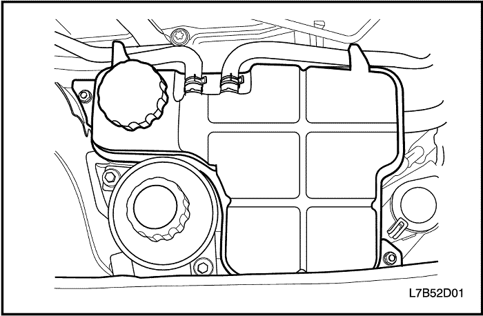
Cámara de compensación
Procedimiento de desmontaje
Precaución: Para evitar lesiones personales, no desmonte el tapón del vaso de compensación mientras el motor y el radiador estén calientes, ya que el calor hace que el sistema permanezca sometido a presión. Se puede producir una emisión violenta de líquido caliente y vapor debido a la presión.
- Extraiga refrigerante del motor hasta que su nivel esté por debajo del vaso de compensación.
- Afloje la abrazadera del manguito de retorno y desconecte dicho manguito de la parte superior del vaso de compensación.
- Afloje la abrazadera del manguito del cuerpo del acelerador y desconecte dicho manguito de la parte superior del vaso de compensación.
- Afloje la abrazadera del manguito de alimentación y desconecte dicho manguito de la parte inferior del vaso de compensación.
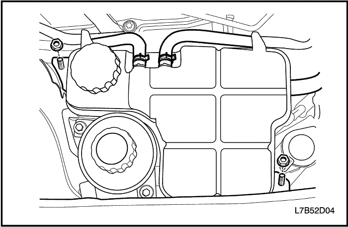
- Quite las tuercas fijación del vaso de compensación.
- Desmonte el vaso de compensación del soporte de fijación.
- Limpie el interior y el exterior del vaso de compensación y el tapón del mismo con agua y jabón.
- Aclare a fondo el vaso de compensación junto con su tapón.
procedimiento de montaje
- Monte el vaso de compensación en el soporte de fijación.
- Asegure las tuercas de fijación del vaso de compensación.
Apretar
Apriete las tuercas de fijación del vaso de compensación hasta 5 N•m (44 lb-pulg.).
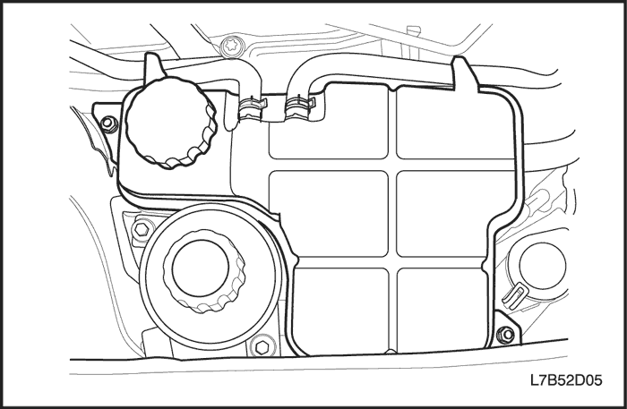
- Conecte el manguito de retorno y el manguito del cuerpo del acelerador a la parte superior del vaso de compensación.
- Conecte el manguito de alimentación a la parte inferior del vaso de compensación.
- Sujete el manguito de retorno, el manguito del cuerpo del acelerador y el manguito de alimentación al vaso de compensación con las abrazaderas de los manguitos.
- Llene el vaso de compensación de refrigerante hasta la arista central o hasta la marca MAX.
Radiador
Procedimiento de desmontaje
- Desconecte el cable negativo de la batería.
- Vacíe el sistema de refrigeración del motor. Consulte el apartado "Vaciado y llenado del sistema de refrigeración" de esta sección.
- Desmonte los ventiladores de refrigeración principal y auxiliar. Consulte el apartado "Ventilador eléctrico del sistema de refrigeración" de esta sección.
- Quite el tornillo de retención superior del radiador.
- Desmonte el soporte de sujeción superior del radiador.
- Retire la abrazadera del manguito superior del radiador.
- Desconecte del radiador su manguito superior.
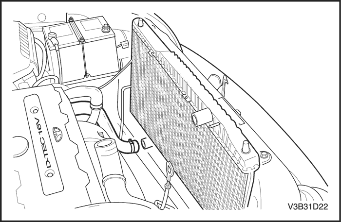
- Retire la abrazadera del manguito del vaso de compensación en el radiador.
- Desconecte del radiador el manguito del vaso de compensación.
- Retire la abrazadera del manguito inferior del radiador.
- Desconecte del radiador su manguito inferior.
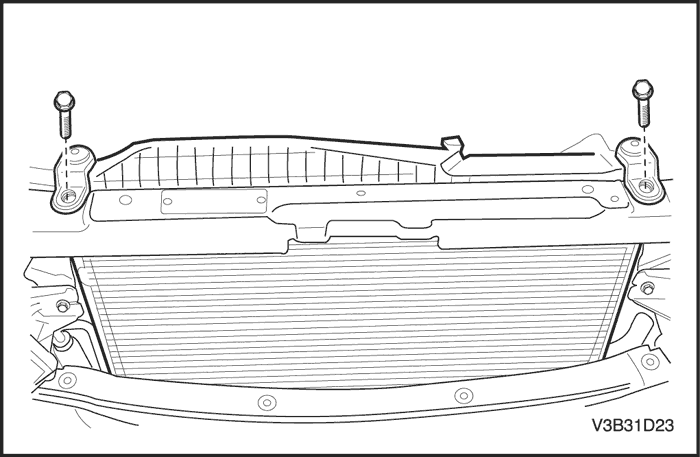
- Desconecte los tubos del refrigerador de aceite de la caja de cambios del depósito inferior del radiador, si dispone del mismo.
- Quite el tornillo y la abrazadera de sujeción del tubo de la caja de cambios.
- Extraiga el radiador del vehículo.
Importante: El radiador todavía contiene una cantidad considerable de refrigerante. Vacíe el resto de refrigerante que quede en el radiador en una bandeja de drenaje.
procedimiento de montaje
- Coloque el radiador en su sitio en el vehículo con las columnas inferiores del radiador en los silentblocs (soportes elásticos de fijación).
- Conecte los tubos del refrigerador de la caja de cambios al depósito inferior del radiador, si dispone del mismo.
- Monte el tubo de la caja de cambios y la abrazadera de sujeción en el radiador con un tornillo.
- Conecte el manguito del vaso de compensación al radiador.
- Sujete el manguito del vaso de compensación con una abrazadera para manguito.
- Conecte los manguitos superior e inferior del radiador a éste.
- Sujete cada manguito con una abrazadera para manguito.
- Coloque las retenciones del radiador en su sitio.
- Monte el soporte de retención superior del radiador.
- Coloque el tornillo de retención superior del radiador.
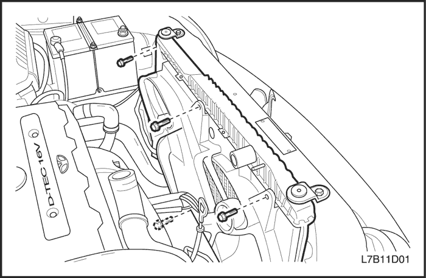
- Monte los ventiladores de refrigeración principal y auxiliar. Consulte el apartado "Ventilador eléctrico del sistema de refrigeración" de esta sección.
- Llene el sistema de refrigeración del motor. Consulte el apartado "Vaciado y llenado del sistema de refrigeración" de esta sección.
- Conecte el cable negativo de la batería.
Apretar
Apriete el tornillo de retención del radiador hasta 14 N•m (10 lb-pie).
DESCRIPCIÓN GENERAL Y FUNCIONAMIENTO DEL SISTEMA
Descripción general
El sistema de refrigeración mantiene la temperatura del motor siempre a un nivel apropiado para su correcto funcionamiento. Cuando el motor está frío, el sistema de refrigeración no enfría el motor, o lo hace lentamente. Esto permite al motor calentarse rápidamente.
El sistema de refrigeración incluye un radiador y un subsistema de recuperación, ventiladores, un termostato y su caja, una bomba de agua y una correa de accionamiento de dicha bomba. La correa de accionamiento acciona la bomba de agua.
Todos los componentes deben estar en perfecto estado para que el sistema funcione correctamente. La bomba de agua succiona el refrigerante del radiador. A continuación, el refrigerante circula por las camisas húmedas en el bloque del motor, el colector de admisión y la culata. Cuando el refrigerante alcanza la temperatura operativa del termostato, éste se abre. A continuación, el refrigerante vuelve al radiador donde se enfría.
Este sistema envía refrigerante al núcleo del calefactor a través de los manguitos. Esto permite los procesos de calefacción y descongelación. El vaso de compensación está conectado al radiador de modo que recupera el refrigerante desplazado por la expansión debida a las altas temperaturas. El vaso de compensación mantiene el nivel apropiado de refrigerante.
El sistema de refrigeración de este vehículo carece de tapón de radiador o boca de llenado. El refrigerante se añade a través del vaso de compensación.
Radiador
Este vehículo presenta un radiador de aluminio fino -y-tubo ligero. Hay depósitos de plástico montados en la parte superior e inferior del núcleo del radiador.
En vehículos equipados con cajas de cambios automáticas, las tuberías del refrigerador de aceite de la caja de cambios pasan por el depósito izquierdo del radiador. El radiador dispone de un grifo de drenaje.
Para vaciar el sistema de refrigeración, abra el grifo de drenaje.
Cámara de compensación
El vaso de compensación es un receptáculo de plástico, parecido al depósito de lavado del parabrisas.
El vaso de compensación está conectado mediante un manguito al radiador y mediante otro manguito se conecta al sistema de refrigeración del motor. Cuando se conduce el vehículo, el refrigerante del motor se calienta y se expande. La parte de refrigerante desplazado por esta expansión circula desde el radiador hasta el vaso de compensación. Allí se desgasifica el aire atrapado en el radiador y el motor.
Cuando se para el motor, el refrigerante se enfría y se contrae. Entonces, el refrigerante desplazado retorna al radiador y al motor. Esto hace que el radiador se mantenga siempre en los niveles deseados de refrigerante e incrementa la eficacia de la refrigeración.
Cuando el sistema esté frío, mantenga el nivel de refrigerante entre las marcas de MIN y MAX del vaso de compensación.
Bomba de agua
La bomba de agua centrífuga accionada por correa está compuesta de un rodete, un eje de accionamiento y una polea de la correa. La bomba de agua va montada sobre la parte delantera del motor de montaje transversal y es accionada por medio de la correa de accionamiento.
Un cojinete completamente sellado sujeta el rodete.
La bomba de agua se repara como un conjunto y, por consiguiente, no puede desmontarse en piezas.
Termostato
Un termostato tipo-bola de cera controla el flujo del refrigerante por el sistema de refrigeración del motor. El termostato va montado en la caja del termostato hacia la parte delantera de la culata.
El termostato detiene el flujo de refrigerante que va del motor al radiador con el objeto de facilitar un - calentamiento más rápido y de regular la temperatura del refrigerante. Cuando el refrigerante del motor está frío, el termostato permanece cerrado, evitando así la circulación de refrigerante a través del radiador. En este punto, sólo se deja circular el refrigerante por todo el núcleo del calefactor con el fin de calentarlo rápida y uniformemente
A medida que se calienta el motor, se abre el termostato. Esto permite al refrigerante circular por el radiador, donde se atenúa el calor. El hecho de que el termostato se cierre y se abra favorece que llegue refrigerante al radiador y el motor funcione a una temperatura adecuada y dentro de los límites.
La bola de cera del termostato está sellada herméticamente en una caja metálica. El elemento de cera del termostato se expande con el calor y se contrae con el frío.
A medida que se conduce el vehículo y el motor se va calentando, la temperatura del refrigerante aumenta. Cuando el refrigerante alcanza una temperatura determinada, el elemento de bola de cera que hay en el termostato se expande, ejerciendo presión contra la caja metálica y obligando a la válvula a abrirse. Esto permite que el refrigerante circule por el sistema de refrigeración y enfríe el motor.
Cuando la bola de cera se enfría, la contracción hace que un muelle cierre la válvula.
El termostato empieza a abrirse a 82°C (179.6°F) y se abre por completo a 97°C (206.6°F). El termostato se cierra a 79°C (174.2°F).
Ventilador de refrigeración eléctrico
Precaución: Con el fin de evitar daños personales, mantenga las manos, herramientas y prendas de vestir alejadas de los ventiladores del motor. Este ventilador es eléctrico y puede entrar en funcionamiento esté o no el motor encendido.
Precaución: Si algún aspa del ventilador se dobla o sufre cualquier tipo de daño, no intente reparar o volver a utilizar la pieza dañada. Un ventilador doblado o dañado debe ser sustituido siempre por otro nuevo. Si no se hace así, pueden producirse lesiones personales.
Los ventiladores de refrigeración van montados detrás del radiador en el compartimento motor. Los ventiladores eléctricos del sistema de refrigeración incrementan el flujo de aire que pasa a través del ventilador del radiador y del condensador en los vehículos equipados con aire acondicionado (A/A). Esto contribuye a aumentar la rapidez de refrigeración cuando el vehículo se encuentra en ralentí o circula a poca velocidad.
Las dimensiones del ventilador principal son de 300 mm (11,8 pulg.) de diámetro con cinco aspas para facilitar el flujo de aire a través del radiador y el condensador. El ventilador es accionado por un motor eléctrico acoplado al soporte del radiador.
Los modelos con aire acondicionado tienen dos ventiladores, el principal y el auxiliar. El ventilador auxiliar tiene 300 mm (11,8 pulgadas) de diámetro. Los modelos sin aire acondicionado sólo disponen del ventilador principal.
A/A apagado o modelo sin A/A
- El módulo de control electrónico del motor (ECM) activa los ventiladores de refrigeración por medio de un relé de baja velocidad y otro relé de alta velocidad. En los vehículos equipados con A/A también se emplea un relé de conexión serie/paralelo para los ventiladores de refrigeración.
- El ECM activará los ventiladores de refrigeración a baja velocidad cuando el refrigerante alcance una temperatura de 93°C (199°F), y a alta velocidad cuando ésta sea de 97°C (207°F).
- El ECM cambiará la velocidad de los ventiladores de alta a baja a los 94°C (201°F) y desactivará los ventiladores a los 90°C (194°F).
Aire acondicionado conectado
- El ECM conectará los ventiladores de refrigeración a baja velocidad cuando se encienda el sistema de aire acondicionado y elevará su velocidad cuando la temperatura del refrigerante alcance los 115°C (239°F), o cuando la presión en el lado de alta del A/A llegue a 1.859 kPa (270 pulg2).
- Los ventiladores de refrigeración volverán a baja velocidad cuando la temperatura del refrigerante alcance 112°C (234°F) o la presión en el lado de alta del A/A llegue a 1.449 kPa (210 lbs/pulg2).
Calefacción del bloque motor
El diseño del vehículo admite un calefactor para el bloque del motor que ayuda a calentar el motor y mejora el arranque el tiempo frío. Asimismo, puede contribuir a reducir el consumo de combustible al calentar un motor frío.
El calefactor del bloque del motor está situado debajo del colector de admisión y usa un tapón de expansión ya existente para la instalación.